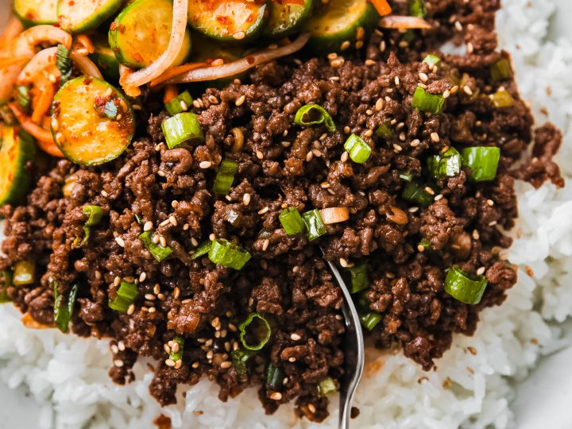

Gochujang Ground Beef & Rice

Description:
A really basic, but delicious meal to cook when you are short on time or feeling lazy.
Ingredients:
- 1/2 lb of Ground Beef.
- Seasoning Seasoning
- 3 tbsp of Gochujang.
- 1/4 sliced up Onion
- 2 Eggs
Steps:
- Get ingredients.
- Heat large cast-iron skillet on medium high heat.
- Season the Ground Beef with seasoning of your choice to taste.
- Toss in Ground Beef.
- After cooking 2-3 minutes, toss in Gochujang sauce and stir thoroughly until Ground Beef turns slightly red.
- Sauteé Onions until caramelized.
- Cook Eggs.